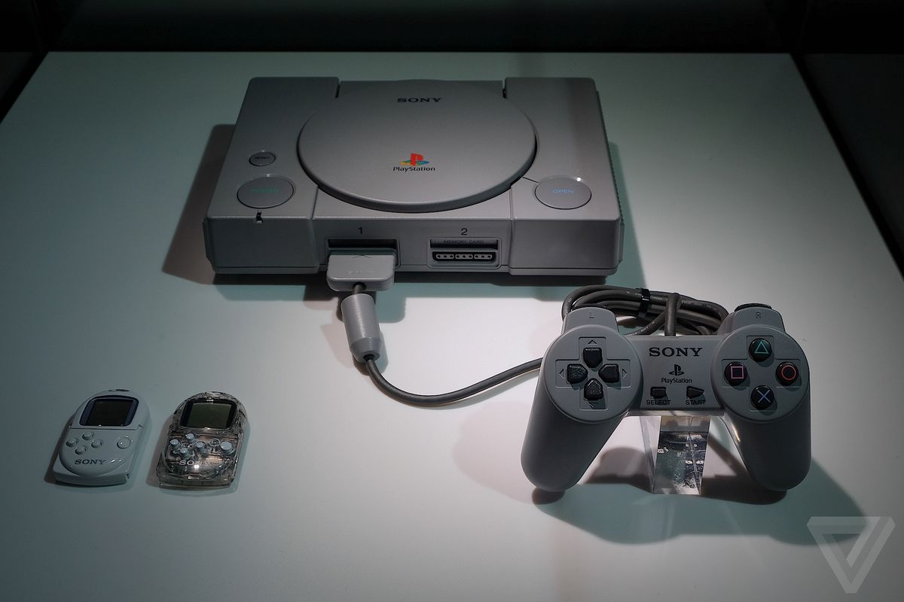
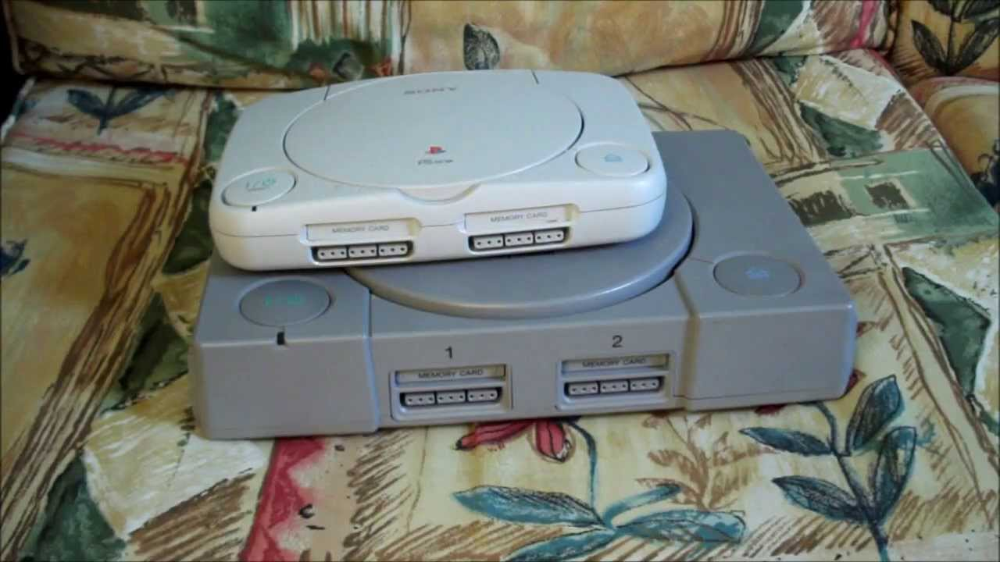
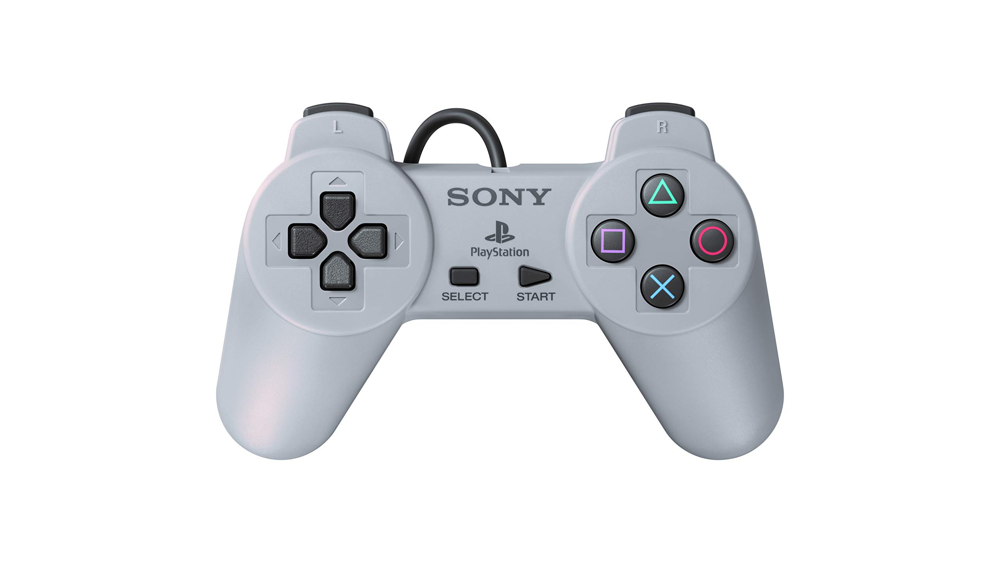
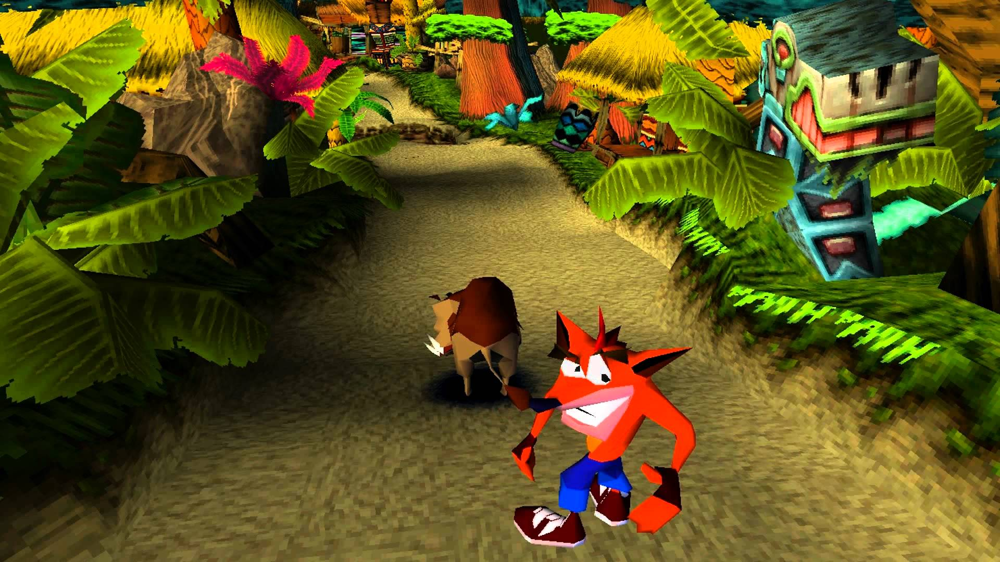

Evolução do Playstation:
Do Psone ao PS5

A partir de 19 de novembro de 2020 chega às lojas brasileiras (e de todo o mundo) o PlayStation 5, mais novo console de videogame da Sony. O PS5 eleva os jogos a um outro patamar, com gráficos melhores, tempo de inicialização menor e uma experiência online mais refinada e completa.
E para celebrar a chegada do PS5, decidimos fazer este artigo remontando toda a história do PlayStation, que já soma mais de 2 décadas e meio bilhão de unidades vendidas em todo o mundo. A marca PlayStation talvez seja a mais lucrativa da Sony e significa entretenimento e diversão para milhões de pessoas.
Falaremos também sobre os jogos mais marcantes ao longo desses 25 anos. Então, aperte os cintos, acomode-se bem na cadeira, no sofá ou na cama e prepare-se para uma prazerosa viagem no tempo!
PlayStation (PSOne) – 1995
Quando eu ouço esse som a nostalgia bate com força! O primeiro PlayStation de todos foi lançado no Japão em 03 de dezembro de 1994. Mas só chegou a mercados internacionais, como os Estados Unidos e Europa, no dia 09 de setembro de 1995. No Brasil ele nunca chegou a ser vendido oficialmente. Mas o mercado informal cansou de ganhar dinheiro vendendo o primeiro PlayStation.
Na época os consoles mais famosos, como o Super Nintendo e o Nintendo 64 ainda usavam cartuchos. Então, quando o PlayStation chegou usando CDs isso foi meio que uma inovação na época. Os CDs permitiam um som melhor e processamento 3D. Ele vendeu mais de 100 milhões de unidades em uma década.
O primeiro PlayStation tinha um visual bem “grosseirão”. Com um formato retangular e de larga espessura, ele era da cor cinza. No centro ficava o espaço de colocar os CDs. Na lateral direita o botão de Liga/Desliga e na lateral esquerda os botões de abrir a tampa do CD e o de Reset. E, na frente, havia os locais para colocar 2 controles e os 2 Memory Cards.
Em 07 de julho de 2000 a Sony lançou uma versão menor. Batizado de PS One, ele tinha a cor branca e, realmente, era bem menor e mais compacto que a versão original.
Controle
O controle do PlayStation foi considerado totalmente inovador para a época. Embora hoje todos sejam mais ou menos parecidos, quem lançou as bases de design e ergonomia foi a Sony. Ele tinha duas saliências (que são mantidas até hoje) na parte inferior, que servia para melhorar a empunhadura e a pegada do console. Além disso, nos ombros do controle havia 4 botões (L1, L2, R1 e R2).
Em 1997 a Sony lançou uma atualização para o controle, desta vez chamado de Dual Shock. Ele mantinha o mesmo design, mas agora vinha com duas alavancas analógicas e um sistema de vibração, que era ativado de acordo com as ações que o jogador executava no game.
Jogos Marcantes
O PlayStation One teve uma série de jogos que marcaram época e são lembrados com muito carinho até hoje. Para mim, particularmente, os melhores foram Crash Bandicoot, Medal of Honor e a trilogia Resident Evil 1, 2 e 3. Inclusive, os 3 primeiras jogos do Crash ganharam um remake para PS4 recentemente e um novo jogo que continua a história.
Medal of Honor foi um dos primeiros FPS (jogos de tiro em primeira pessoa) a serem lançados e que eu também joguei. Curtia muito a ambientação, música e sons do jogo. E Resident Evil dispensa comentários, um dos jogos de survival horror de maior sucesso até hoje.
Mas é claro que houveram muitos outros jogos maravilhosos e que marcaram época. Dentre alguns exemplos podemos citar: Tomb Raider, Metal Gear Solid, Final Fantasy, Tony Hawk’s Pro Skater e muitos outros.